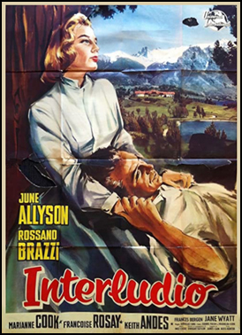
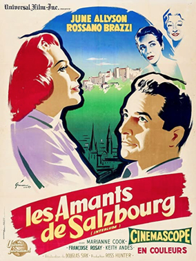
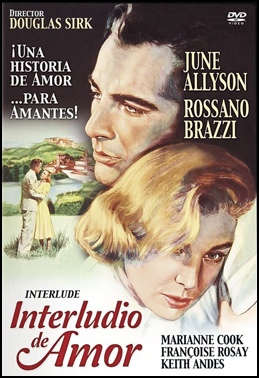

Interlude
SYNOPSIS
Helen Banning, an American, moves to Munich, Germany to begin a new job with a cultural agency. She meets a handsome doctor, Morley Dwyer, but lets him know she is reluctant to begin any new relationships.
New boss Prue Stubbins introduces her to symphony conductor Tonio "Tony" Fischer then, concerned about the upcoming performance, asks Helen to follow him when he abruptly leaves the concert hall. At the estate of a countess, Irena Reinhart, she finds Tony playing piano for a woman, Reni, unaware it is his wife.
Tony is distraught because Reni is mentally ill, given no chance to improve. He becomes attracted to the American woman and invites her to accompany him to Salzburg, Austria for a day, which leads to a few intimate hours together. She is later furious after discovering he is a married man.
Morley, aware that Helen has had an affair, proposes marriage to her anyway. The countess, on the other hand, urges Helen to follow her heart and find happiness with him. Reni turns up at the concert to beseech Helen not to take her husband away from her. Back at the estate, Reni attempts suicide and is rescued by Helen from a lake. Helen permanently ends her relationship with Tony and decides to return home.
The film is a reworking of When Tomorrow Comes, a 1939 film starring Irene Dunne and Charles Boyer. Both films were based on a novel by James M. Cain. Sirk cited Serenade as the title of that book, but in March 2014, in a long article for 'Senses of Cinema' in which he discussed all three works, critic Tom Ryan revealed that both pictures are based on Cain's The Root of His Evil.
The movie was filmed entirely on location between June and August 1956 in Germany and Austria with studio work filmed at the Geiselgasteig Studios in Munich. The concert scenes were filmed in the Kongress-Saal of the Deutsches Museum. Schloss Höhenried, at Bernried am Starnberger See was used as Tonio's castle. Other scenes were filmed in Munich at the Konigsplatz, Schleissheim Palace and Amerika Haus (at the time located in the former Führerbau), with additional scenes shot in Salzburg, Austria.
Daniel Fuchs and Franklin Coen were responsible for the screenplay, with Inez Cook undertaking the adaption. All of the orchestral music heard in the film was recorded by the Kurt Graunke Symphony Orchestra, with the exception of the music that is heard during the scenes that take place in Salzburg, which were recorded by the Mozarteum's Camerate Academica Orchestra.
It was released in France with the title Les Amants de Salzbourg, in Germany under the title Der letzte Akkord ("The Last Chord") and in Italy under the title Interludio. For Marianne Koch this film was one of her two Hollywood productions in 1956 (both under the slightly Americanized pseudonym Marianne Cook). In the German release, she was credited under her real name.


